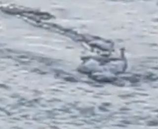
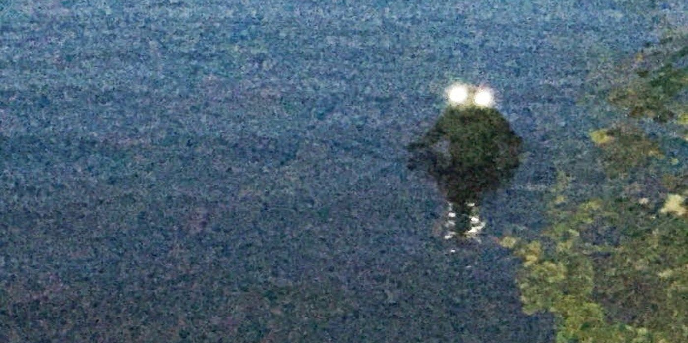

BLOG
April 7th Weekly blog entry #30
How goes it rafters? Reports have been coming in of an unidentifiable creature near the shore of Chaser River. We only have 1 photo of this creature (pictured belowed). If encountered, do not attempt to approach, as we cannot determine whether it is hostile or not at this time. If you can identify what this creature is, please contact us on one of our social media pages.

April 18th Weekly blog entry #32
How goes it rafters? Earlier this morning, our motion sensor camera captured something (pictured below). We are unsure who or what this is, as none of our staff members were in the area at the time. Like with the still unidentified creature from 11 days ago, we advise all guests to not approach this creature if encountered, as the creature’s hostility is undetermined at this time. If you can identify whatever is in this picture, please contact us in the direct messages of our social media pages.
